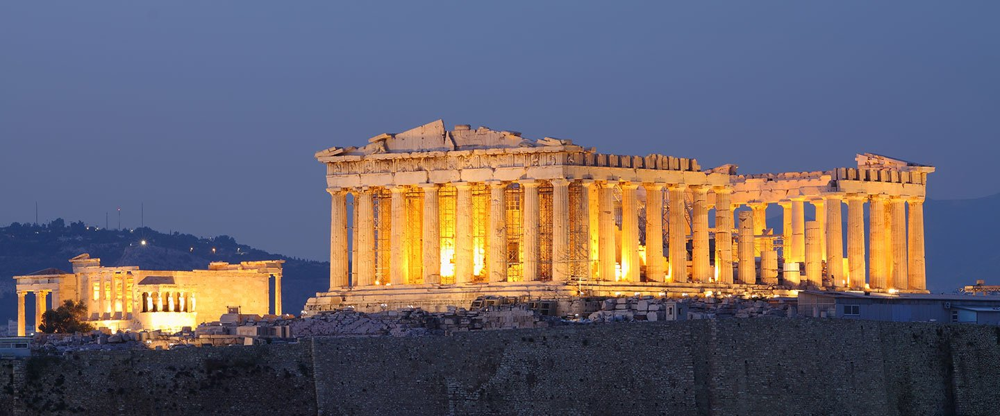
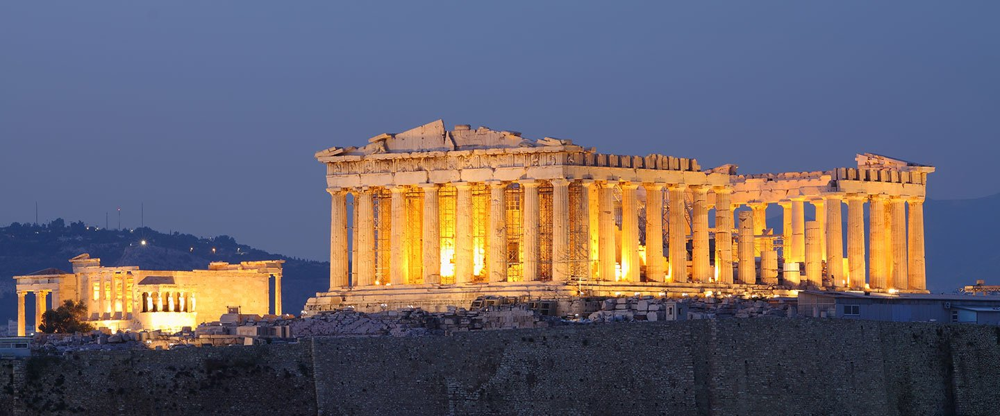

Atenas
Atenas (em grego: Αθήνα; em grego antigo: Ἀθῆναι, transl.: Athēnai) é a capital e a maior cidade da Grécia. A cidade domina a região da Ática e é uma das cidades mais antigas do
mundo, sendo que seu território está continuamente habitado há 3 400 anos. A Atenas Clássica, do período da Grécia Antiga, foi uma poderosa pólis (cidade-Estado) que surgiu
em conjunto com o desenvolvimento do porto de Pireu. Um centro artístico, estudantil e filosófico desde a Antiguidade, a cidade sediou a Academia de Platão e o Liceu de
Aristóteles, além de ser amplamente considerada como o berço da civilização ocidental e da democracia, em grande parte devido ao impacto de suas realizações
culturais e políticas durante os séculos IV e V a.C. no resto do continente europeu. Atualmente, é uma metrópole cosmopolita e o centro econômico, financeiro, industrial,
político e cultural da Grécia. Em 2012, Atenas foi classificada como a 39ª cidade mais rica do mundo por paridade do poder de compra (PPC) e a 77ª mais cara em um estudo
do UBS AG.